가평 근린생활시설 인테리어 디자인
당구장·스크린골프·파티룸·다락까지 층별 용도와 분위기를 다르게 계획한 4층 공간 디자인
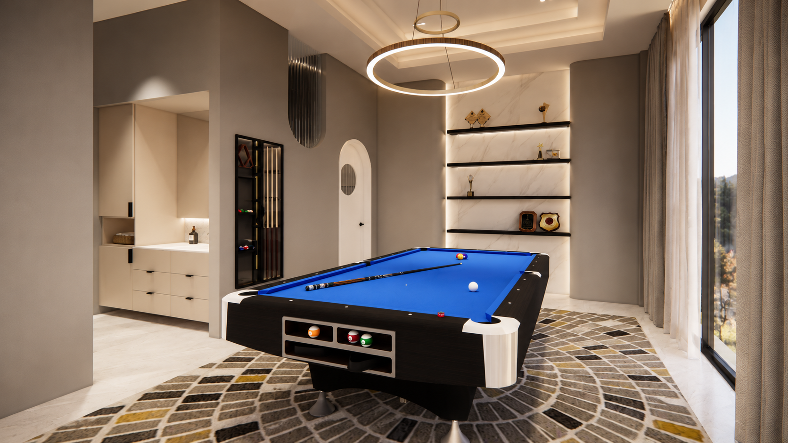
한 건물 안에 여가와 휴식을 층별로 담았습니다.
안녕하세요. 디자인소통입니다.
이번 프로젝트는 가평 신축 근린생활시설의 1층부터 4층 다락까지 직원들과의 워크숍, 지인들과의 여가, 식사와 파티, 숙박과 휴식을 한 건물 안에서 즐길 수 있도록 층별 목적에 맞춰 구성한 인테리어 디자인 사례입니다.
1층은 현관과 세탁실, 2층은 당구장과 실내골프장, 3층은 다이닝·파티룸과 침실, 4층은 다락 침실과 휴식공간으로 계획해 같은 건물 안에서도 각 층이 서로 다른 분위기와 기능을 갖도록 디자인했습니다.
블랙 계단을 중심으로 정돈한 현관과 세탁실
1층 현관은 들어서는 순간 블랙 계단이 자연스럽게 시선을 끌 수 있도록 디자인했습니다. 심플한 블랙 컬러와 벽면 간접조명이 대비를 이루며 계단 자체가 하나의 인테리어 포인트가 되도록 구성했습니다.
현관 한쪽에는 작은 싱크대와 상·하부 수납장을 배치한 세탁실을 마련해, 한정된 공간 안에서도 세탁과 간단한 정리 작업을 편리하게 할 수 있도록 했습니다.
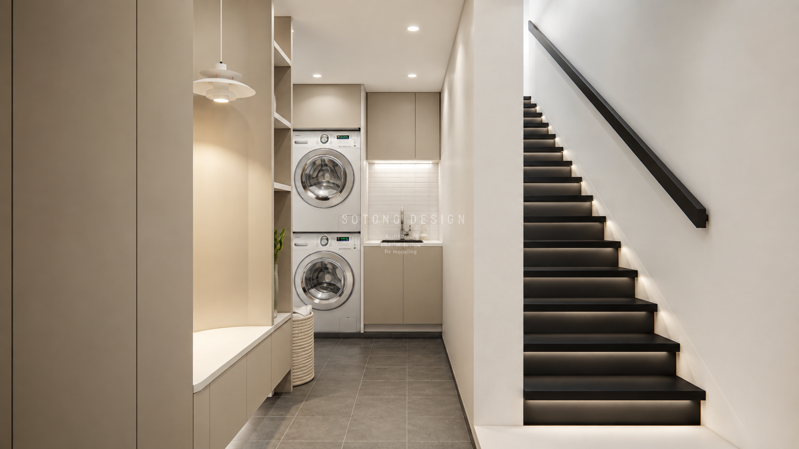
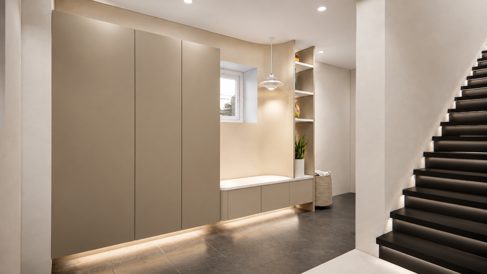
벤치와 수납을 한쪽 벽면에 정리했습니다.
신발장 옆에는 신발을 편하게 신고 벗을 수 있는 벤치 공간을 마련하고, 자주 사용하는 물품을 정리할 수 있도록 수납공간을 함께 구성했습니다. 디자인뿐 아니라 실제 사용할 때의 편리함까지 고려한 1층 공간입니다.
게임과 휴식을 함께 즐기는 2층 여가공간
계단을 따라 올라가면 당구장과 실내골프장으로 구성된 2층이 이어집니다. 입구에는 아이보리 톤의 작은 탕비공간과 건식 세면대를 배치하고, 전체 공간은 밝고 정돈된 분위기를 유지하면서 각 기능이 자연스럽게 구분되도록 계획했습니다.
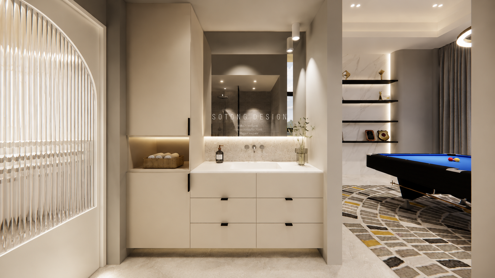
큐대 수납과 모루유리 아트월
당구장에는 벽 안쪽 공간을 활용해 당구 큐대를 깔끔하게 수납할 수 있도록 구성했습니다. 사용하지 않을 때도 공간이 복잡해 보이지 않도록 위치를 정리했고, 한쪽에는 모루유리를 활용한 아트월을 적용해 기능적인 수납과 디자인 포인트를 함께 만들었습니다.
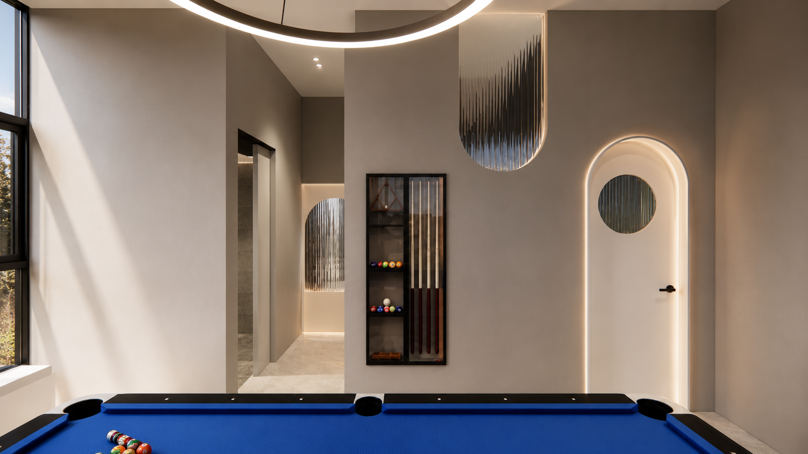
패턴 카펫과 전시 선반으로 완성한 당구장
또 다른 벽면에는 트로피와 상장을 전시할 수 있는 맞춤 선반장을 제작했습니다. 조명을 더해 전시된 소품이 자연스럽게 돋보이도록 하고, 바닥에는 패턴 카펫을 적용해 당구대와 선반장, 조명이 하나의 분위기로 이어지도록 톤을 맞췄습니다.

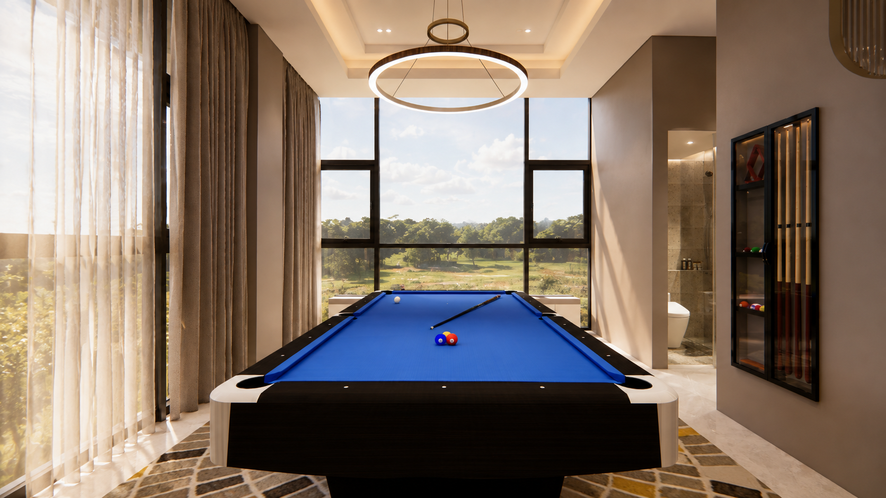
스크린골프와 휴게공간을 하나의 동선으로
당구장 안쪽에는 스크린을 중심으로 골프를 즐길 수 있는 실내골프장을 구성했습니다. 넓은 창을 통해 외부 풍경과 자연광이 들어오도록 계획해 실내에서도 답답하지 않은 개방감을 느낄 수 있도록 했습니다.
한쪽에는 테이블과 소파를 배치해 골프를 즐기는 중간에 휴식을 취하거나, 함께 방문한 사람들과 담소를 나눌 수 있는 휴게공간도 마련했습니다.
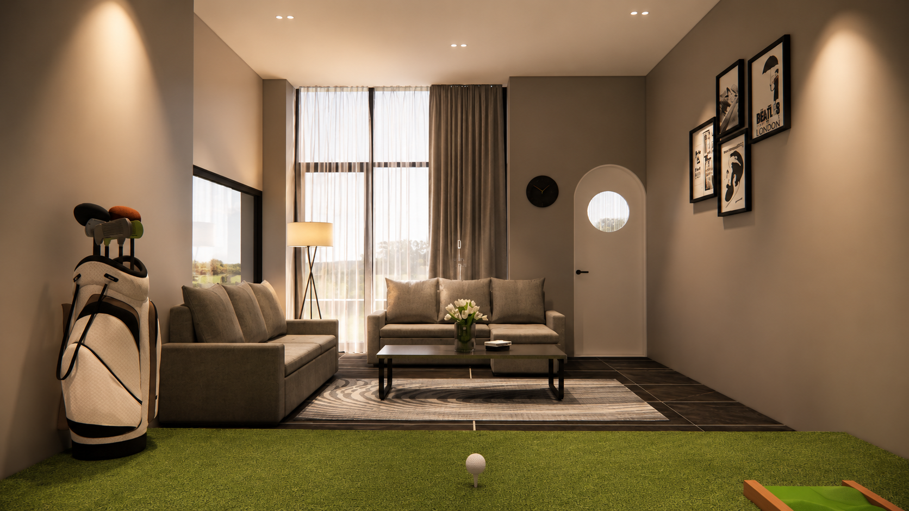
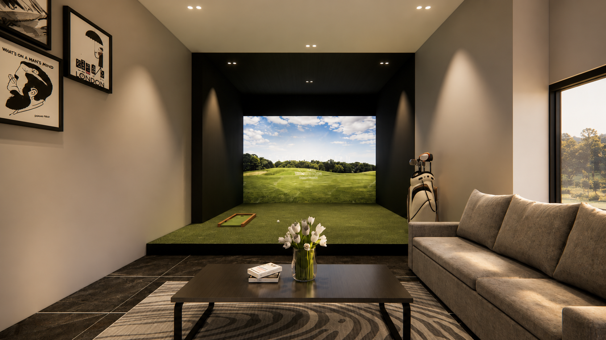
식사와 공연, 휴식까지 이어지는 3층
3층은 공연과 파티를 함께 즐길 수 있는 다이닝·파티룸을 중심으로 구성했습니다. 여러 사람이 함께 시간을 보낼 수 있도록 작은 무대와 넓은 다이닝 테이블을 배치하고, 식사와 대화, 간단한 공연이나 이벤트가 한 공간에서 이어지도록 계획했습니다.
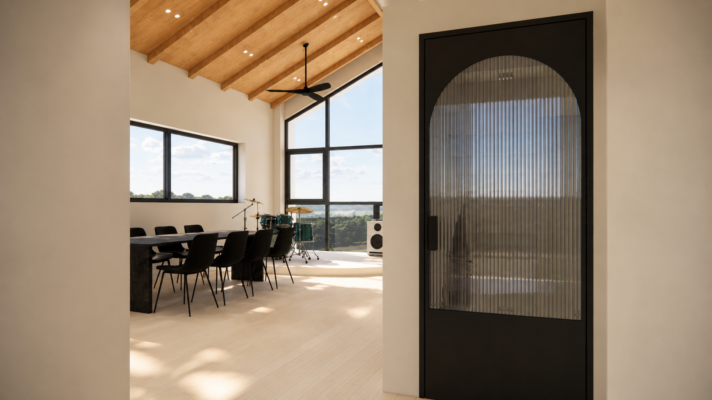
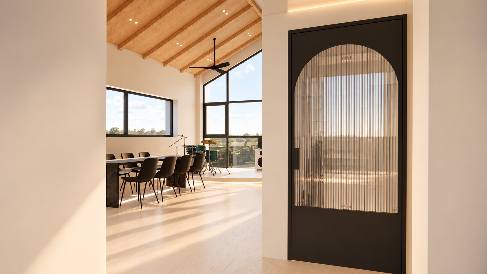
파티룸과 바로 연결되는 주방·다이닝
3층 한쪽에는 간단한 조리와 식사를 함께 즐길 수 있는 주방 공간을 구성했습니다. 음식을 준비한 뒤 넓은 다이닝 공간으로 자연스럽게 이동할 수 있도록 동선을 연결하고, 무대 공간과도 시각적으로 이어져 요리와 식사, 공연과 파티를 한 층에서 즐길 수 있도록 했습니다.
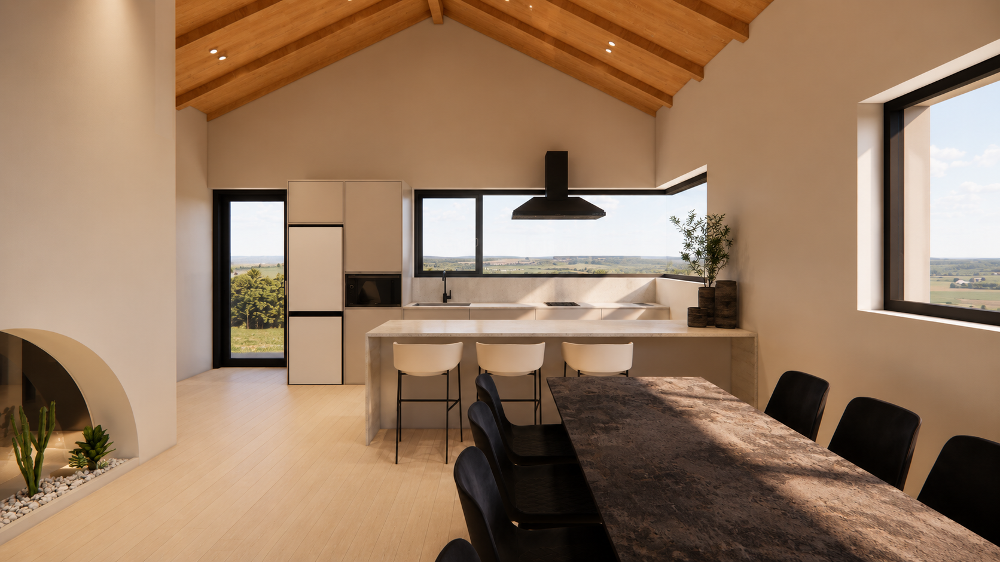
파티룸 옆에 배치한 욕실과 침실
무대 옆쪽에는 욕실과 침실을 함께 배치해 파티와 다이닝을 즐긴 뒤에도 별도의 큰 이동 없이 바로 휴식을 취할 수 있도록 동선을 구성했습니다. 활기찬 공용공간과 편안한 개인공간이 한 층 안에서 자연스럽게 전환되도록 계획한 부분입니다.
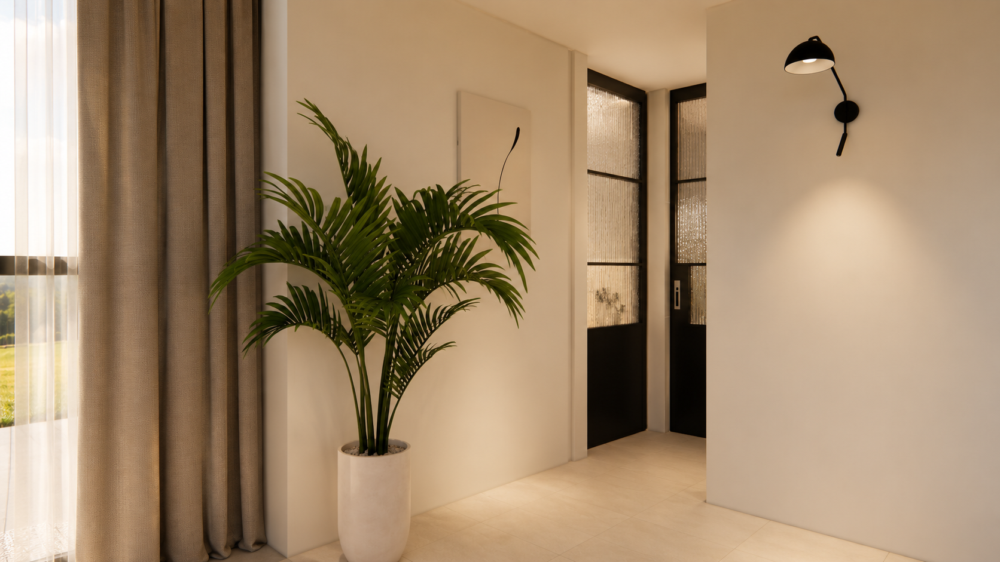
아이보리 타일과 넓은 창을 활용한 욕실
3층 욕실은 아이보리 톤의 타일로 깔끔하면서도 따뜻한 분위기를 만들었습니다. 욕조 옆 넓은 창을 통해 외부 경관을 감상할 수 있도록 하고, 자연광이 들어오며 욕실이 더욱 밝고 개방감 있게 느껴지도록 구성했습니다.
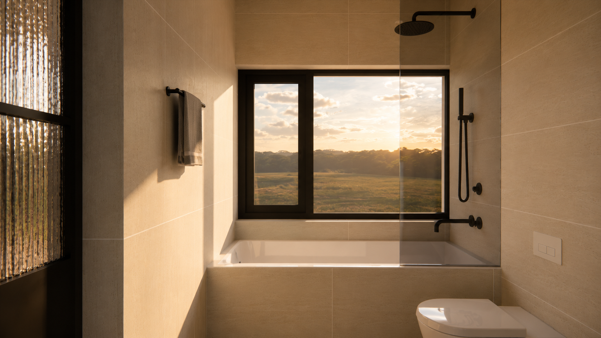
휴식과 간단한 업무를 함께 고려한 침실
침실은 침대 상부의 간접조명과 우드톤 마감으로 차분한 분위기를 연출했습니다. 한쪽에는 책상과 서랍장을 함께 배치해 간단한 서류 작업이나 개인 업무도 가능하도록 했으며, 휴식과 실용적인 사용이 함께 이루어지는 공간으로 계획했습니다.
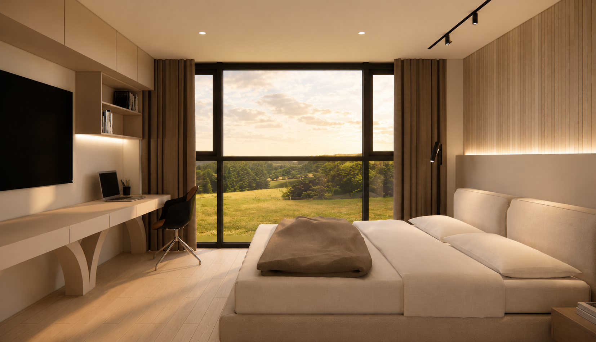
다락으로 이어지는 계단에도 조경 포인트를 더했습니다.
3층에서 4층 다락으로 올라가는 계단 벽면에는 조경 요소를 더해 자연스러운 포인트를 주었습니다. 단순한 이동 동선으로 끝나지 않도록 계단과 벽면도 하나의 인테리어 장면처럼 구성했습니다.
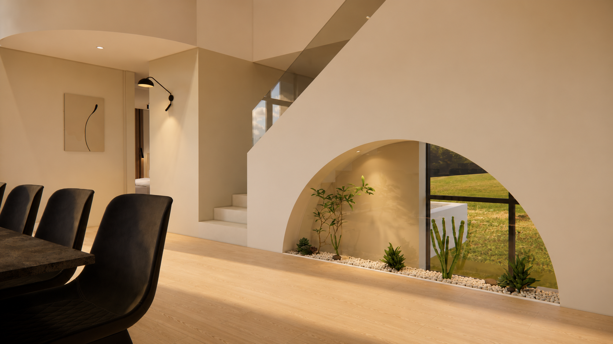
낮은 천장을 활용해 아늑함을 살린 다락
4층 다락은 편안한 휴식을 위한 침실과 수납공간을 중심으로 구성했습니다. 3층 침실과는 다른 분위기를 느낄 수 있도록 보다 아늑하고 차분한 무드로 계획하고, 다락 특유의 낮은 천장과 사선 구조를 디자인 요소로 활용했습니다.
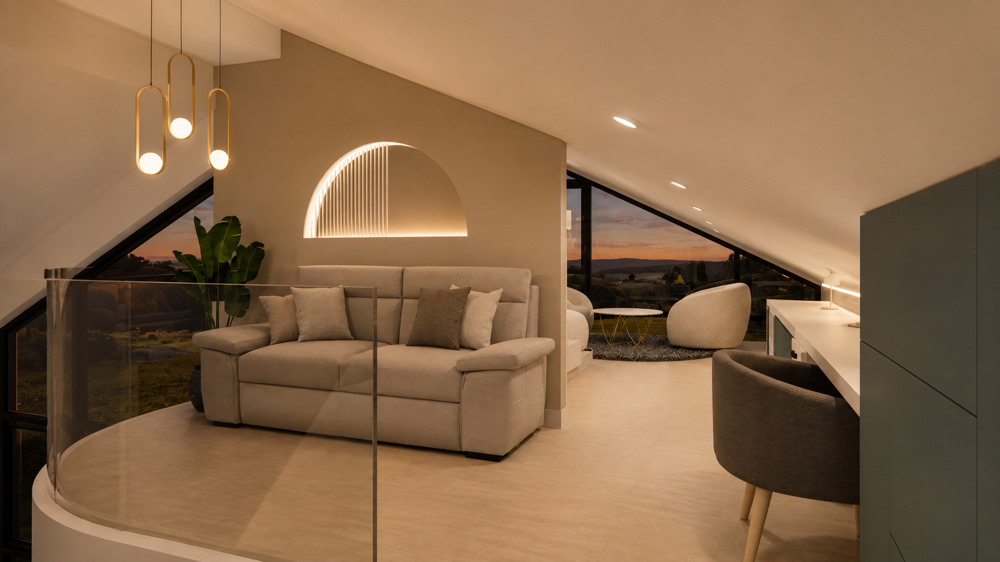
낮은 벽면은 수납으로, 창 방향은 침실의 시선으로
한쪽 천장이 낮은 구조적 특성을 고려해 낮은 벽면을 따라 수납공간을 한 방향으로 정리했습니다. 버려질 수 있는 공간을 수납으로 활용하면서 전체적으로 깔끔하고 통일된 인상을 만들었습니다.
침대는 창밖의 풍경을 바라볼 수 있도록 창문 방향으로 배치하고, 침대 뒤쪽에는 가벽을 설치해 시선을 정리하면서 침실의 아늑함을 높였습니다.
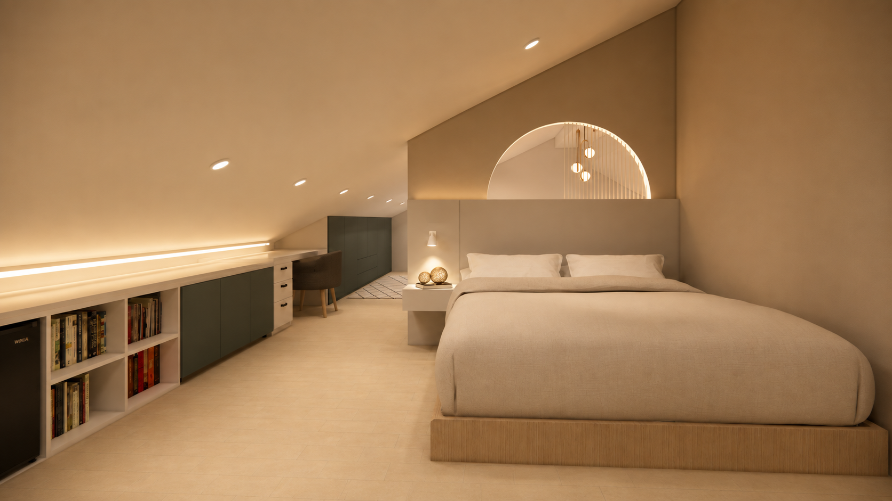
창가에는 완전한 휴식을 위한 작은 라운지를
창가에는 은은한 스탠드 조명과 티테이블을 배치해 여유롭게 머무를 수 있는 휴식공간을 마련했습니다. 넓은 창을 통해 바깥 풍경을 감상하며 커피나 차를 즐길 수 있도록 가구의 방향을 계획해, 다락 특유의 아늑함과 창밖의 개방감을 함께 느낄 수 있도록 했습니다.
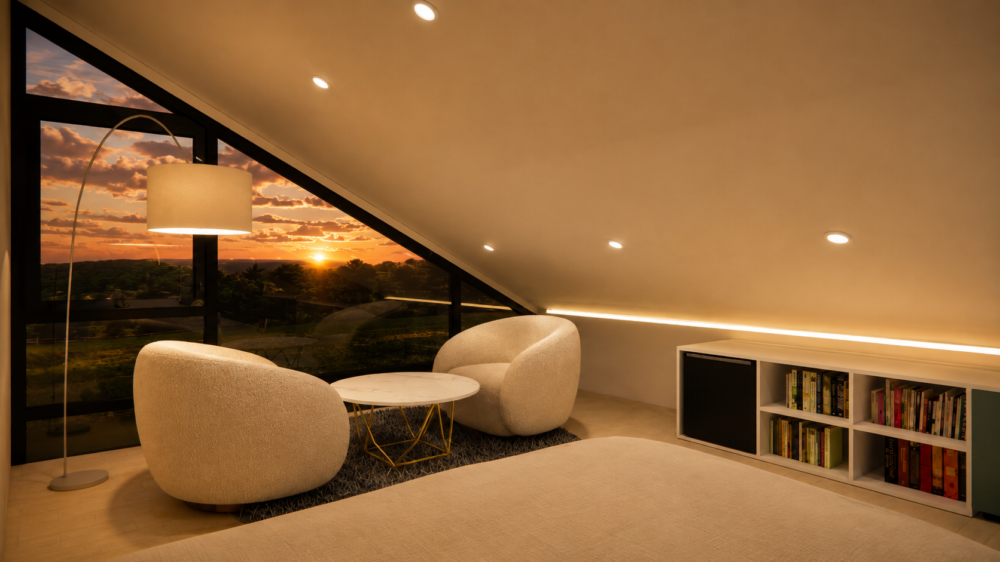
공간의 목적이 달라지면, 같은 건물도 전혀 다른 경험이 됩니다.
지금까지 가평 근린생활시설 인테리어 디자인을 층별로 소개해드렸습니다. 1층 현관과 세탁실부터 2층 당구장과 실내골프장, 3층 다이닝·파티룸과 침실, 4층 다락 휴식공간까지 각 층의 용도와 분위기에 맞춰 서로 다른 공간으로 구성했습니다.
디자인소통은 고객님의 라이프스타일과 공간의 목적을 충분히 고려해 디자인과 실용성을 함께 갖춘 공간을 제안합니다. 홈인테리어와 상업 인테리어를 비롯해 근린생활시설 인테리어, 외관 디자인, 대수선, 증축 등 다양한 공간 관련 작업을 진행하고 있습니다.
핵심 설계 포인트
층별 기능을 명확하게 구분
현관·여가·파티·휴식의 성격을 층별로 나누어 사용 목적이 자연스럽게 이어지도록 구성했습니다.
당구와 스크린골프를 한 층에
게임 공간과 휴게공간을 함께 계획해 여러 사람이 편안하게 머무르며 여가를 즐길 수 있도록 했습니다.
모임과 휴식을 연결한 3층
다이닝·주방·무대와 침실·욕실을 한 층에 구성해 모임 이후의 휴식까지 고려했습니다.
낮은 천장까지 활용한 다락
사선 천장과 낮은 벽면을 수납과 조명, 휴식공간으로 활용해 다락의 구조적 특성을 장점으로 바꿨습니다.
공간에 대한 다음 대화를 시작해 보세요.
주거·상업공간 인테리어부터 신축·대수선까지 상담부터 설계와 시공을 함께합니다.
※ 본 프로젝트의 이미지는 공간 구성과 마감·조명 방향을 전달하기 위한 3D 시각화 자료입니다.